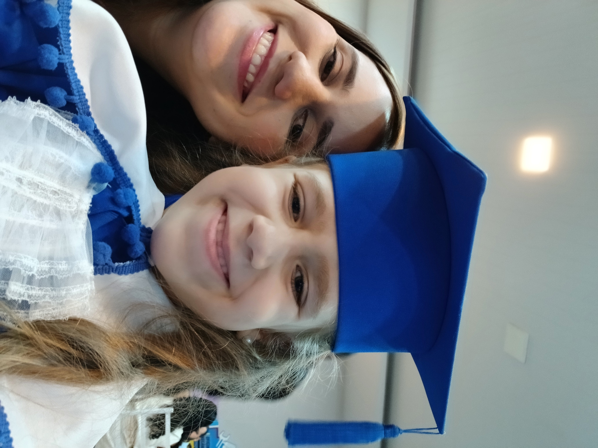
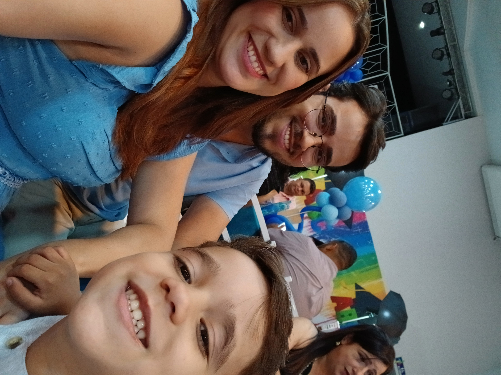
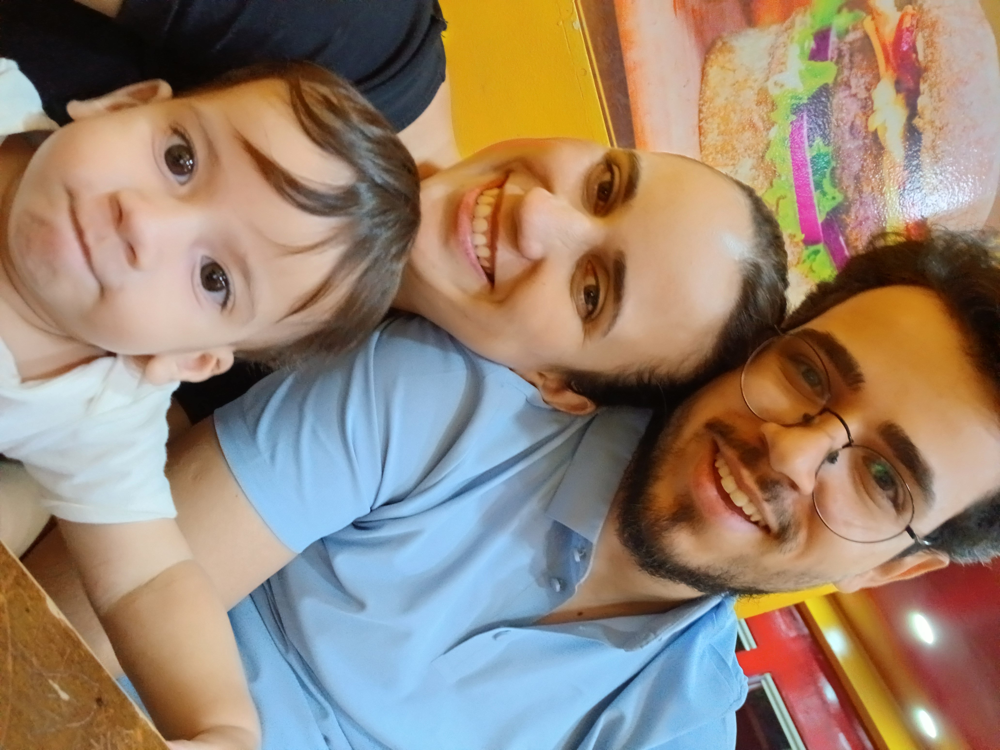
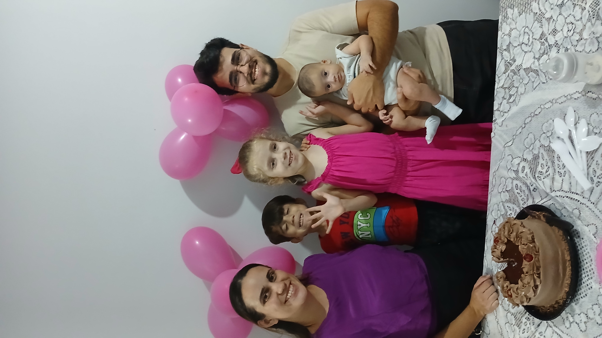
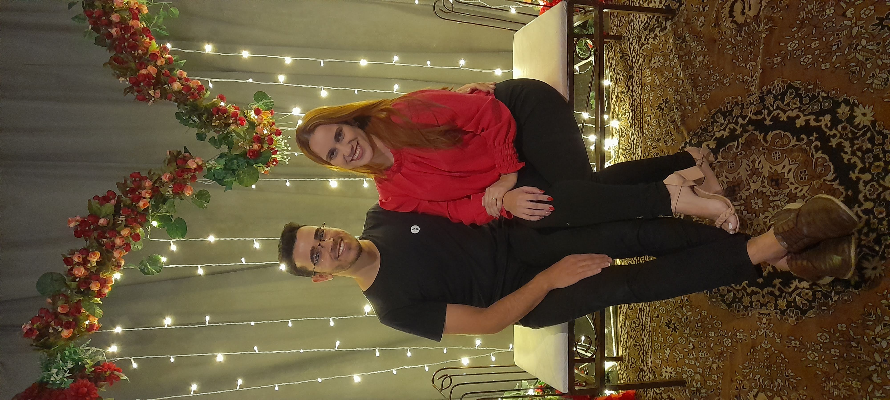
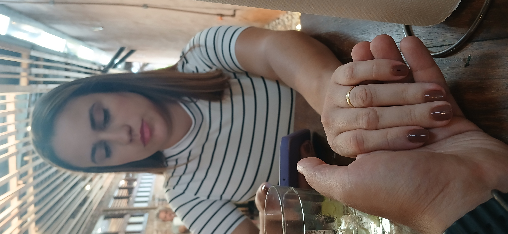

Tem gente que entra numa sala e muda o clima dela. Jéssica é assim. Você é esposa, é mãe de três, é aquela que segura a casa em pé nos dias difíceis e ainda sobra colo pra quem precisa. É guerreira sem parecer, é doce sem perder a força, é fé que não vacila mesmo quando o chão balança.
É a mulher do sorriso que a gente reconhece de longe, do nariz que franze quando ri de verdade. É quem lidera ao meu lado, quem dança quando adora, quem sonha alto mesmo com a agenda cheia.
Hoje o mundo comemora 31 anos da sua chegada — e a gente comemora 31 anos de ter você por perto.
💛
Capítulo 2
Nossa história
Novembro de 2016
Nos conhecemos
Na igreja, através de uma amiga em comum. Ninguém imaginava o tamanho que aquilo ia tomar.
03 de Agosto de 2017
Começamos a namorar
O início de tudo o que viria depois.
28 de Abril de 2018
Nos casamos
No cartório, sem cerimônia — só nós dois assinando o compromisso mais importante da nossa vida.
03 de Maio de 2019
Nasceu a Ester
Nossa primeira filha, e o começo de sermos família de três... depois de quatro, depois de cinco.
04 de Fevereiro de 2021
Nasceu o Estevão
No meio de um dos períodos mais difíceis, mais uma prova de que Deus não nos deixou.
24 de Janeiro de 2025
Nasceu o Ethan
O caçula que completou a nossa família.
12 de Setembro de 2026
Hoje: 31 anos
Trinta e um anos de uma vida que só fez a nossa família ficar mais bonita.
Capítulo 3
A melhor mãe do mundo

Ester
7 anos

Estevão
5 anos

Ethan
1 ano
Ester, Estevão e Ethan tiveram muita sorte. Sorte de ter uma mãe que troca
noite mal dormida por colo, birra por paciência, e cansaço por mais um
"eu te amo" antes de dormir. Você é o colo que eles procuram primeiro
e o nome que vão lembrar com carinho a vida inteira.

Capítulo 4
Minha esposa


Uma carta que eu escrevi só pra você.
Capítulo 5
Fé em ação, a dois
💑💃🧒
Fora de casa, vocês continuam servindo juntos. Você e o Diego lideram o
Ministério de Casais, caminhando ao lado de outras famílias. Vocês também
lideram o Ministério Infantil, cuidando das crianças da igreja com o mesmo
carinho que cuidam dos de vocês.
E no meio de tudo isso, tem a dança — o seu jeito de adorar com o corpo
inteiro, de um jeito que só você tem.
Capítulo 6
Cartas pra mamãe
👧
Ester
abrir carta
👦
Estevão
abrir carta
👶
Ethan
abrir carta
Capítulo 7
31 motivos pra celebrar você
Capítulo 8
O que ainda vem por aí
🏡
Uma casa pensada nos mínimos detalhes do jeito que você sempre quis — estilo casa de fazenda, com a sua cara.
✈️
Viajar bastante e conhecer praias diferentes pelo mundo, em família.
❄️
Ver neve de verdade, pelo menos uma vez.
A história de vocês ainda tem muitos capítulos pela frente.
Capítulo 9
Cofre de memórias
Capítulo 10
Há 31 anos, o mundo ficou mais bonito
0anos
0meses
0dias
00horas
00min
00seg
31anos
3filhos
8+anos casados
Capítulo 11
Feliz Aniversário, Jéssica!
Que Deus abençoe seus 31 anos com muita saúde, alegria e fé.
Que os próximos capítulos sejam tão bonitos quanto os que você
já escreveu pra gente.
💛
Com todo amor, Diego, Ester, Estevão e Ethan
Jéssica,
Hoje o mundo ficou 31 anos mais bonito, porque foi nesse dia que você chegou nele.
Lembra como a gente se conheceu? Uma amiga te levou na igreja, e eu lembro de
pensar que talvez a gente virasse só bons amigos. Até que um dia eu abri o
WhatsApp pra ver sua foto e acabei te ligando sem querer. Você atendeu
perguntando se eu precisava de alguma coisa, e eu, sem jeito, só consegui ser
sincero: "Não, fui tentar ver sua foto e acabei te ligando." Eu não sabia que
aquela ligação boba ia virar isso tudo.
Sei que, quando a gente olha pra trás, às vezes parece que nosso casamento foi
mais marcado pelas dificuldades do que pelas alegrias. Mas eu quero que você
saiba que eu vejo as bênçãos: a Ester, o Estevão e o Ethan, nossa casa, nosso
carro, e o privilégio de servir a Deus lado a lado com você. Deus sempre nos
deu alívio bem no meio das dificuldades, e eu tenho certeza de que foi porque
a gente atravessou tudo junto.
Tem uma época que eu nunca vou esquecer: a pandemia. Eu não conseguia
trabalhar, e você, mesmo com nosso bebê pequeno no colo, começou a fazer cone
trufado e donuts pra vendermos. Você fazia os doces em casa cuidando do nosso
filho, e eu saía pra vender na rua. Foi você que segurou a gente naquele
momento, e eu preciso te dizer isso com mais frequência: eu reconheço o
tamanho do que você fez por essa família. Não foi pouco.
E no meio de tanta preocupação, eu continuo reparando nas mesmas coisas de
sempre: a sua risada, que eu reconheceria em qualquer lugar. O jeito que seu
nariz franze quando você sorri. A cor dos seus olhos. São detalhes pequenos,
mas são os que eu mais amo em você.
Obrigado por ser minha parceira, minha melhor amiga, e a mãe que a Ester, o
Estevão e o Ethan têm a sorte de ter. Que Deus continue nos sustentando, como
sempre sustentou, por muitos e muitos aniversários.
Feliz aniversário, amor. Ou, como eu te chamo quando quero te ver sorrir:
feliz aniversário, branquela. Eu te amo.
— Diego
Mainha,
Feliz aniversário! Você é a melhor mãe do mundo inteiro. Eu te amo até as
estrelas e volta! Obrigada por fazer meu cabelo todo dia, por me ajudar
quando eu erro e por me dar beijo de boa noite.
Eu quero ser igualzinha a você quando crescer.
Beijos da sua Ester 👧💛
Mãe,
Feliz niver! Você é a mãe mais forte e mais gostosa de abraçar do mundo
todo! Obrigado por fazer comida gostosa e por brincar comigo.
Eu te amo até o céu, até a lua e até mais um pouquinho!
Do seu Estevão 👦💙
Mamãe,
Eu ainda não sei falar direito, mas o papai tá escrevendo por mim: toda
vez que você me pega no colo, eu sei que estou no lugar mais seguro do
mundo. Seu cheiro, sua voz, seu carinho — é tudo que eu conheço de amor
até agora.
Obrigado por cuidar de mim.
Seu bebê, Ethan 👶🤍